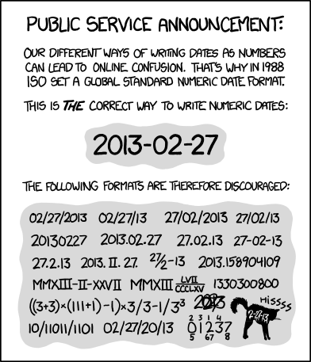

[1] "2024-07-16"as.numeric(today())[1] 19920Dates and times are one of the most annoying data classes to deal with. There are many different ways of storing date and time information, and it’s easy to get them mixed up. Fortunately, there are a number of tricks that help make things easier, most of which are in the package lubridate. (which is part of tidyverse)
For more info, see: https://r4ds.hadley.nz/datetimes.html
First, let’s look at dates. Dates are stored as the number of days since the origin (default origin is 1970-01-01). We can use the today function to get a date with today’s value.
Now let’s talk about date-times. R automatically stores the dates and times together as the number of seconds since the origin.
Note that R automatically set the time in Pacific Daylight time since that is what the operating system of this computer uses.
If you have a list of dates and times that you are importing into R, the read_csv or read_excel functions can usually guess when they are dates, particularly if they are in YYYY-MM-DD format, but sometimes they get confused. They have an especially hard time if they are in a non-standard format, such as MM/DD/YY. In this case, the field will get read in as a character and you have to convert it to a date/time class, usually POSIXct.
Before we do that, let’s learn a bit about different types of date/time classes.
Date - Number of days since origin.
POSIXct - Number of seconds since origin. This is the most common format.
POSIXlt - List of vectors with components sec, min, hour, mday, mon, and year. You probably won’t use this format very often.
POSIXct is more convenient for including in data frames, and POSIXlt is closer to human-readable forms. Both classes may have an attribute tzone, specifying the time zone. See ?DateTimeClasses for details.
Note: There is no built-in “Time” class, only “DateTime”. Some packages (like hms) have developed ways to deal with times on their own, but it doesn’t come with your base R installation.
The built-in function to convert from characters to dates is strptime
?strptimeTo use this function, we just feed in the date in character form and specify what format it is in. The format syntax is a little annoying, but the documentation for strptime gives you all the options.
#date in character format
date1 = "2/3/2021"
#Convert it. Little m for month, little d for day, capital Y for four-diget year.
date1a = strptime(date1, format = "%m/%d/%Y")
date1a[1] "2021-02-03 PST"#Try a different format. Lowercase y for two-digit year.
date2 = "2/3/21"
date2a = strptime(date2, format = "%m/%d/%y")
date2a[1] "2021-02-03 PST"#Now one with a time on it. Note that any spaces or dashes need to be the same in the format call as in your character vector.
date3 = "2-3-2021 08:15"
date3a = strptime(date3, format = "%m-%d-%Y %H:%M")
date3a[1] "2021-02-03 08:15:00 PST"The format strings are quite annoying, so fortunately the lubridate package has a number of shortcut functions to make converting easier.
?ymdLet’s try the dates we converted above with these functions.
Note that strptime defaulted the time zone to PDT, whereas mdy_hm defaulted to UTC. It’s always wise to specify your time zone manually to make sure issues don’t come up.
mdy_hm(date3, tz = "America/Los_Angeles")[1] "2021-02-03 08:15:00 PST"Note that when I specified the time zone, I actually specified the location, since we switch time zones with Daylight Savings.
To get a complete list of time zone names, see OlsonNames()
If you have a dataset that is collected in California, but doesn’t use Daylight savings, use Etc/GMT+8. GMT (Greenwich Mean Time) doesn’t change with daylight savings, and we are 8 hours ahead.
mdy_hm(date3, tz = "Etc/GMT+8")[1] "2021-02-03 08:15:00 -08"R automatically displays dates and times in Year-Month-Day format. This is the international standard. If you want to change the output format, just use the format function.
But really, why would you want to change the format?

https://xkcd.com/1179
As noted above, there is no built-in time class. Only date/time classes. So, if we have a bunch of times R will automatically add a date to them.
[1] "2024-07-16 01:20:00 PDT" "2024-07-16 02:30:00 PDT"
[3] "2024-07-16 03:50:00 PDT" "2024-07-16 14:00:00 PDT"It will usually default to today’s date, or sometimes to Dec 31st, 1899. If you have a “Date” and a “Time” column in your dataframe, it’s best to just combine them for manipulation.
datesandtimes = data.frame(times = c("1:20", "2:30", "3:50", "14:00"),
dates = c("2021-01-01", "2023-12-01", "2011-06-04", "2022-10-11"))
str(datesandtimes)'data.frame': 4 obs. of 2 variables:
$ times: chr "1:20" "2:30" "3:50" "14:00"
$ dates: chr "2021-01-01" "2023-12-01" "2011-06-04" "2022-10-11"datesandtimes = mutate(datesandtimes,
Date = ymd(dates),
Time = strptime(times, format = "%H:%M"),
DateTime = ymd_hm(paste(dates, times)))
str(datesandtimes)'data.frame': 4 obs. of 5 variables:
$ times : chr "1:20" "2:30" "3:50" "14:00"
$ dates : chr "2021-01-01" "2023-12-01" "2011-06-04" "2022-10-11"
$ Date : Date, format: "2021-01-01" "2023-12-01" ...
$ Time : POSIXlt, format: "2024-07-16 01:20:00" "2024-07-16 02:30:00" ...
$ DateTime: POSIXct, format: "2021-01-01 01:20:00" "2023-12-01 02:30:00" ...If you do really want to deal with just the time part of a date/time object, use the hms package.
Lubridate has a lot of really useful thing to take dates and times apart. Like figuring out the month, year, day, etc.
#month (as number or name)
month(date1a)[1] 2month(date1a, label = TRUE)[1] Feb
12 Levels: Jan < Feb < Mar < Apr < May < Jun < Jul < Aug < Sep < ... < Dec#year
year(date1a)[1] 2021#day of year
yday(date1a)[1] 34#day of week
wday(date1a, label = T)[1] Wed
Levels: Sun < Mon < Tue < Wed < Thu < Fri < Sat